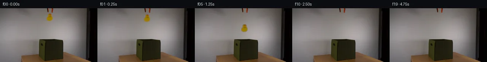

![首帧]()

Round 00
2026-11-05T15:21:38.289778+00:00像素候选变化代码 +359/−0inspection 更新
pixels 9c72b2a419afe8f3 · code 0dd2215707a4f721
查看本轮 generate.py 真实 diff
--- previous/generate.py
+++ current/generate.py
@@ -0,0 +1,359 @@
+"""PixelWorld-Text: Yellow rubber duck released into dark green fabric box.
+
+Scene: Static locked-off shot. Orange-black grabber tool releases a yellow rubber duck
+above an open dark green fabric box on a wooden table. The duck falls into the box under gravity.
+
+Methods:
+- Duck sprite: Extracted from frame 0 via color-based alpha mask (yellow/golden detection with edge expansion).
+- Background inpainting: Horizontal interpolation from adjacent columns in each row to fill duck removal area.
+- Box occlusion: Front-wall pixels in box region (y≥84, x∈[82,145]) from frame 0 composited on top.
+- Physics: Parabolic gravity fall with 2 bounce cycles and damping. Position tracked analytically.
+"""
+
+import numpy as np
+from PIL import Image
+from pathlib import Path
+import sys
+
+sys.path.insert(0, str(Path(__file__).parent))
+from artifact_io import save
+
+CASE_DIR = Path(__file__).parent
+TMP = CASE_DIR / ".tmp"
+TMP.mkdir(exist_ok=True)
+H, W = 144, 256
+N_FRAMES = 20
+FPS = 4
+
+# ── Load first frame ──
+img = Image.open(CASE_DIR / "first_frame.png")
+frame0 = np.array(img, dtype=np.uint8) # (144, 256, 3)
+
+# ══════════════════════════════════════════════════════
+# 1) Duck sprite extraction (alpha mask)
+# ══════════════════════════════════════════════════════
+
+def build_duck_sprite(f0):
+ """Extract yellow duck sprite with alpha mask from frame 0."""
+ r, g, b = f0[:,:,0].astype(np.int32), f0[:,:,1].astype(np.int32), f0[:,:,2].astype(np.int32)
+
+ # Yellow core: high R+G, low B
+ yellow_core = (r > 110) & (g > 40) & (b < 80) & ((r - b) > 40)
+
+ # Expand mask to include edge/anti-aliased pixels
+ from scipy.ndimage import binary_dilation
+ struct = np.ones((3, 3), dtype=bool)
+ yellow_expanded = binary_dilation(yellow_core, structure=struct, iterations=1)
+
+ # Constrain to duck region (from observation)
+ y_min, y_max = 14, 36
+ x_min, x_max = 120, 140
+
+ mask = np.zeros((H, W), dtype=bool)
+ mask[y_min:y_max, x_min:x_max] = yellow_expanded[y_min:y_max, x_min:x_max]
+
+ # Flood-fill cleanup: only keep the connected component containing the duck
+ from scipy.ndimage import label
+ labeled, n_components = label(mask)
+ counts = np.bincount(labeled.ravel())
+ if n_components > 1:
+ # Keep the largest component
+ largest = np.argmax(counts[1:]) + 1
+ mask = (labeled == largest)
+
+ ys, xs = np.where(mask)
+ print(f" Duck mask: {len(ys)} pixels, bbox x=[{xs.min()},{xs.max()}], y=[{ys.min()},{ys.max()}]")
+
+ # Tight bbox
+ dy_min, dy_max = ys.min(), ys.max() + 1
+ dx_min, dx_max = xs.min(), xs.max() + 1
+
+ sprite_rgb = f0[dy_min:dy_max, dx_min:dx_max].copy()
+ sprite_alpha = mask[dy_min:dy_max, dx_min:dx_max].astype(np.uint8) * 255
+
+ return {
+ 'rgb': sprite_rgb,
+ 'alpha': sprite_alpha,
+ 'bbox': (dy_min, dy_max, dx_min, dx_max), # in full-frame coords
+ 'h': dy_max - dy_min,
+ 'w': dx_max - dx_min,
+ }
+
+duck = build_duck_sprite(frame0)
+DUCK_H, DUCK_W = duck['h'], duck['w']
+duck_y0, duck_y1, duck_x0, duck_x1 = duck['bbox']
+
+# ══════════════════════════════════════════════════════
+# 2) Background inpainting (fill duck removal area)
… diff truncated; 272 more lines …